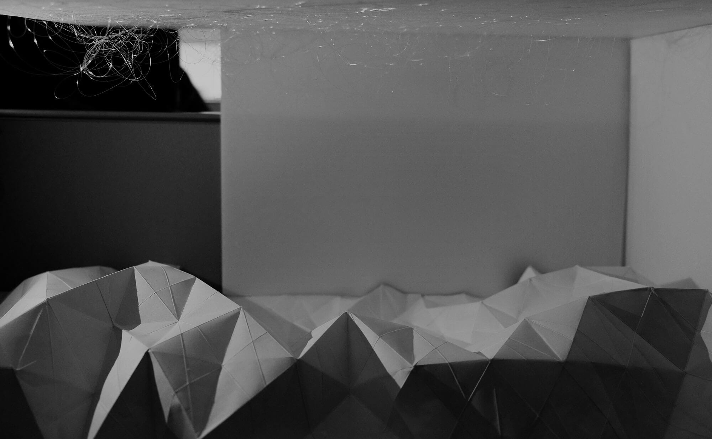
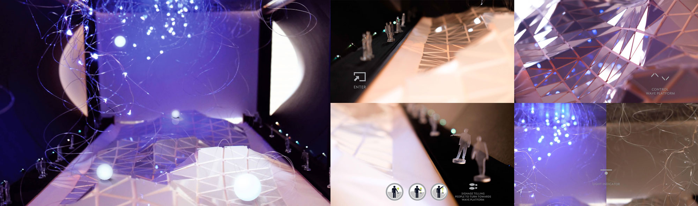

'96SEC' is an interactive architecture conceptual design project with project theme 'control'. It was a student project for HKPU School of Design MDes(Interaction Design) Embedded Interaction Design module in spring 2014, guided by Mr. Michael Fox, Principal of Foxlin Architects(US). The project was conducted in group of four - Akela LO, Quincey L. DONG, Tommy QUEK, and me.
Project Brief
Introduction to 96SEC
MY ROLE
Research & Ideation
- We went to field research for several times, observing people's commute behavoir and emotional expression. With the insights from research, we decided to create intervention with a public interactive ambient design.
Mechanics & Prototyping
- I was responsible for the mechanical design and prototyping of this design concept. The prototype includes structural design, circuit design, moving mechanic design, and wood/plastic crafting.
3D Rendering & Photomontage
- I 3D rendered the designed ambient in order to present the concept in spatial perspective. A photomontage was produced imitating how the design concept looks like in real environment.
The Vision
Connect To The Real World
Commuting breeds unhappiness. Those with long transit times often suffer from disproportionate pain, stress, obesity, and dissatisfaction. Fast life pace and addiction to the cellphones cause isolation between people, and disconnect them from the real physical world. Take a short, relaxing interlude during your mundane commute in order to gather your thoughts and feelings before starting your day. Detach from the virtual world, involving in interactions with the environment and people around you.
The Concept
An Interactive Public Ambient
The 96SEC is an interactive ambient design based on the corridor between Hong Kong MTR station to Central MTR station. The length of the walkway is 72m, which takes 96 seconds to travel from one side to the other using the escalator walkway. Give commuters 96 seconds of peace in an ordinarily stressful environment. Relax the mind in order to think more clearly and productively through an interactive experience. Prevent stress from controlling your state of mind. Interact and connect to the real world, extricating from the loneness.
The Design
Origami Mechanical Floor + Illuminative Floating Ballons + Interactive lighting Ceiling
INTERACTIVE CONTROL SYSTEM
Each set of interaction control includes a LEAP Motion and a compress air button. There are several giant balloons rolling in this area and the LEAP Motion is used to control the floor landscape so that the balloons will move accordingly. When a balloon lands in certain area, the compress air button will illuminate. Pressing the button triggers the release of compress air, which shoots the balloons to the ceiling. The ceiling will performe lighting effects when the balloons approach.
AMBIENT PHOTOMONTAGE

PROTOTYPING
VIDEO
View The Concept In A Dynamic Way